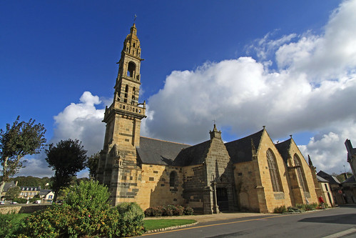
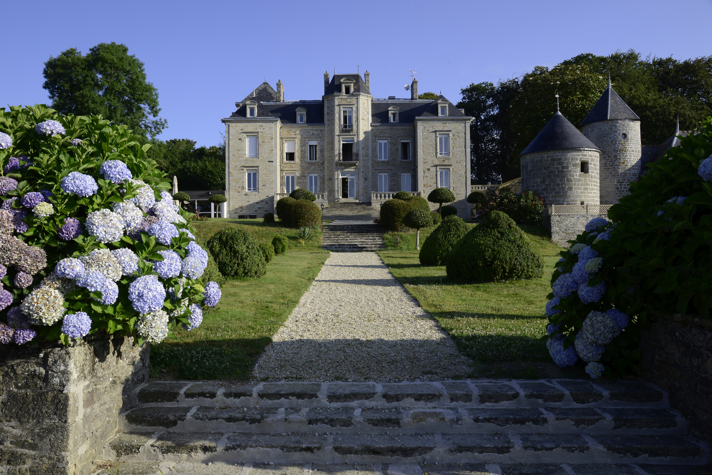
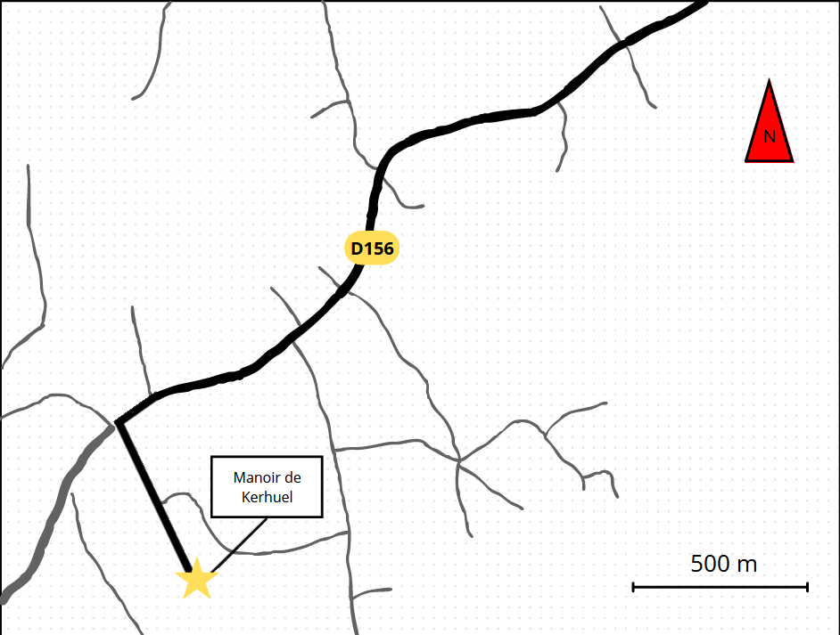

Eglise Saint Sauveur
Adresse de l'église : Rue du Général de Gaulle, 29590, Le Faou.

Manoir de Kerhuel
Adresse du manoir : Route de Quimper Kerhuel, 29720, Plonéour-Lanvern.

Plan d'arrivée au manoir
Prendre à droite sur D 156
Attention, bien prendre route de Kerhuel sur la gauche et pas celle d'avant Kervouyen Braz.